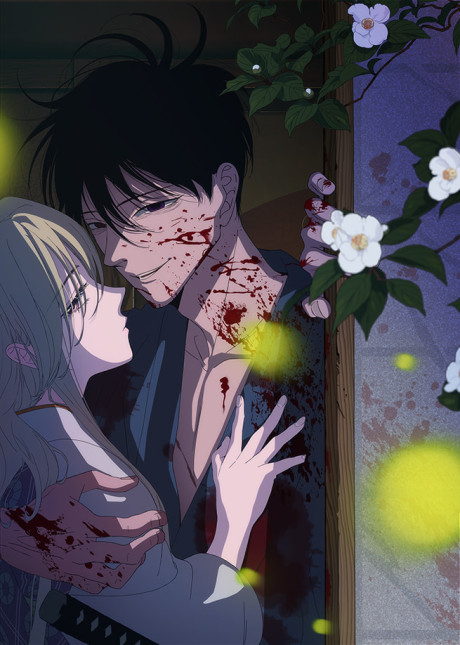
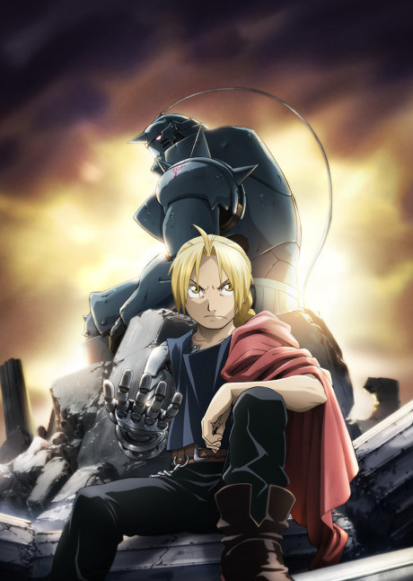
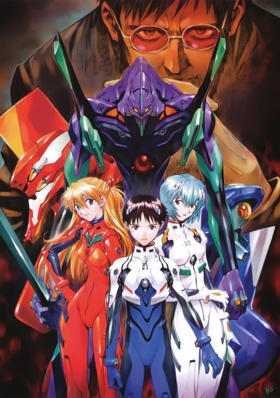

AKIBAYOUR PERSONAL LISTINGS
2026.11.24火曜日 TUE秋アニメ FALL23:42
Hana
今夜は
3本。
Three of your shows air tonight, and two earlier ones are still unwatched.
Tonight 火曜 11/24
23:00Fuji TV

Kusuriya no Hitorigoto 3rd Season
Ep 9 · airs in 1h 18m
ep 8 unwatched
24:00TOKYO MX

Hotaru no Yomeiri
Ep 8 · airs in 2h 18m
caught up
25:30BS11

Tougen Anki: Nikko Kegon
Ep 9 · airs in 3h 48m
caught up
Behind 2 shows
–1ep

JoJo: Steel Ball Run
7 of 11 · ep 9 aired Sun
–3eps

Tokyo Revengers: Santen Sensou
5 of 13 · ep 8 aired Mon
今週の番組表 This week, in your slots
watchedaired, unwatchednot yet aired
| 月MON 23 | 火TODAY 24 | 水WED 25 | 木THU 26 | 金FRI 27 | 土SAT 28 | 日SUN 29 | |
|---|---|---|---|---|---|---|---|
| 22:00 | Sat 22:30Black Clover S2 ep 8 | ||||||
| 23:00 | |||||||
| 24:00 | Hotaru no Yomeiri#8 · 24:00 | Thu 24:30Koori no Jouheki S2 ep 9 (not on your list) |
|||||
| 25:30 |
棚 · Latest on your shelf last 6 finished
 Sousou no Frieren10 / 10
Sousou no Frieren10 / 10 Shingeki no Kyojin25 / 25
Shingeki no Kyojin25 / 25 Steins;Gate24 / 24
Steins;Gate24 / 24 Cowboy Bebop26 / 26
Cowboy Bebop26 / 26
Fullmetal Alchemist B.64 / 64
Evangelion26 / 26
履歴 · Diary this week
- Tougen Anki ep 8+1
- Hotaru no Yomeiri ep 7+1
- JoJo: Steel Ball Run ep 7+1
- Kusuriya no Hitorigoto ep 7+1
- Sousou no Frieren finished9★